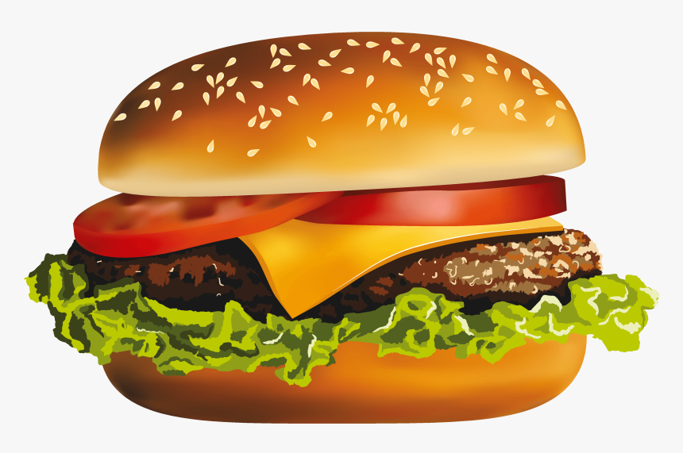

Burger Recipe!

Description
This is a very quick delicious burger recipe for anyone who wants to make some delicious patties at home for their family. Minimal ingredients and short cook time
ingredients
- 1 lb of ground beef (80/20)
- 1 egg
- 1 roma tomato
- Iceberg Lettuce
- Buns of course!
- Salt and pepper
Steps
- Mix up the ground beef into a bowl.
- Mix the egg into the ground beef; this helps it keep its shape and not break.
- Form the patties into circular shapes. Be sure to keep them flat for an even cook. You can also put a thumb print in the center to help keep juices in
- Salt and pepper 1 side of the patty before putting it on the grill
- Put the patties on the grill; 4 minutes per side.
- Cut up the roma tomato into thin slices, not thicker than your patties.
- Break off some pieces of lettuce for some crunch
- Once you flip the burgers apply salt and pepper to the other side of the burger
- Toast some buns either on the grill or with a toaster
- Once the burgers are done let them sit for a minute to soak up juices again
- Assemble your burger and enjoy!
Other tips!
Some other stuff you can do is spice it up with some other ingredients. I Like onions and pickles but my wife doesnt. You can also get some cheese and put it on about 2 minutes before the burger is done and let it melt to one side! Enjoy!